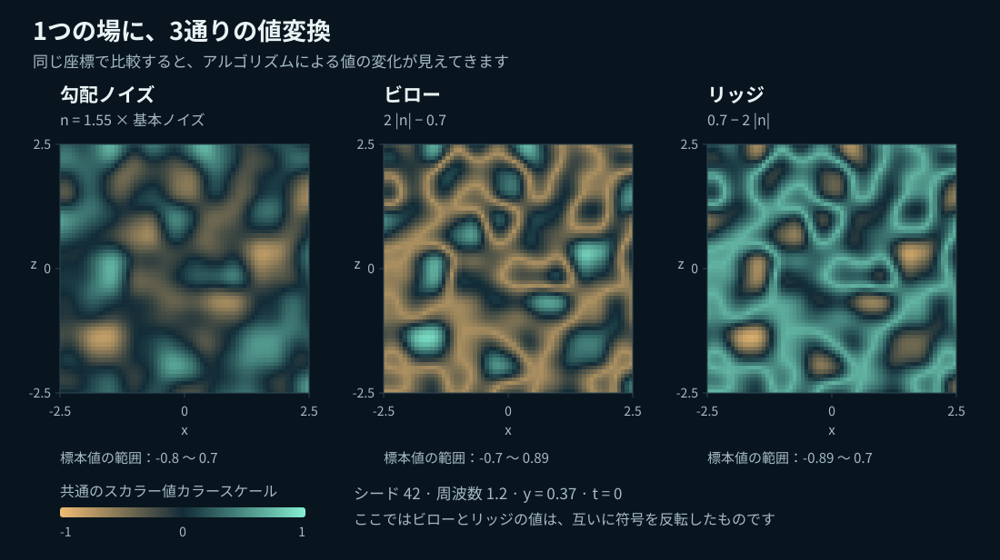
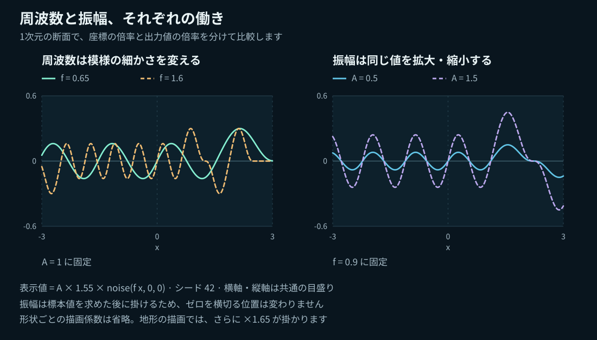
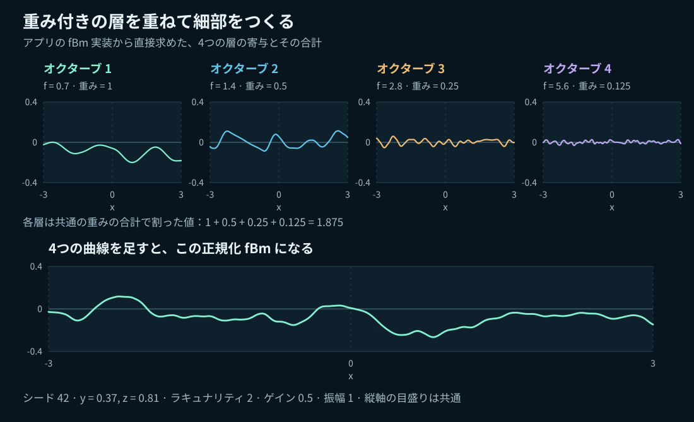
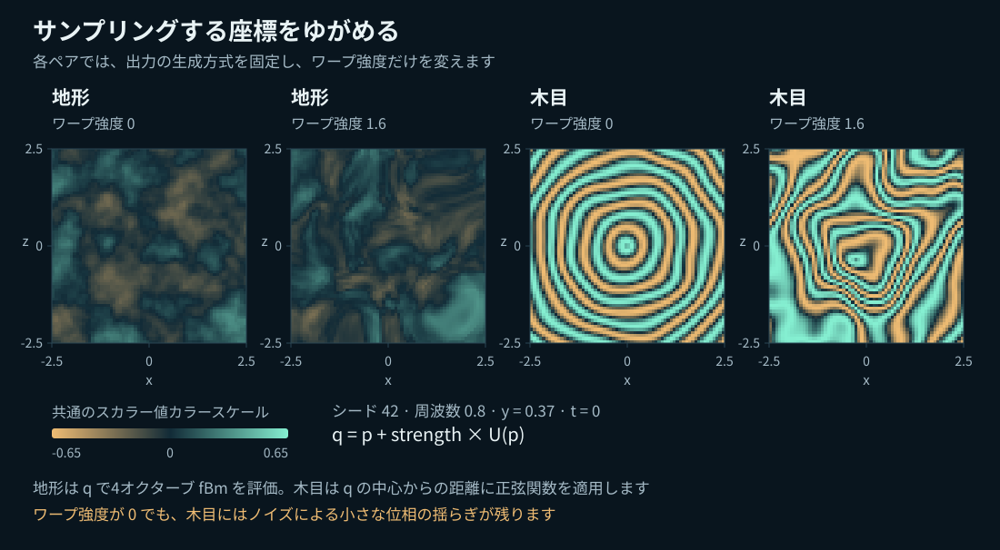
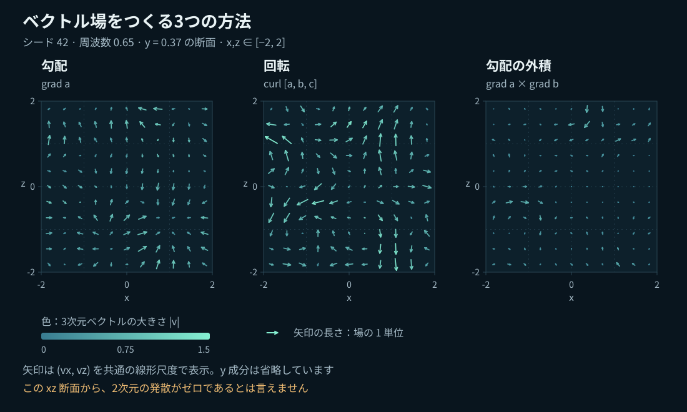
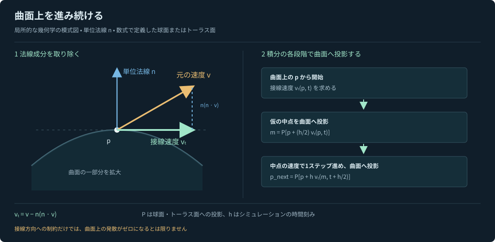
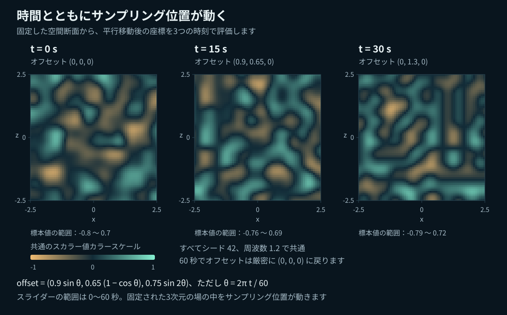

Noise
グラディエントノイズは、ある位置に対してひとつの数値、つまりスカラーを返します。BillowとRidgedは、その同じ値の形を変換します。
比べながら学ぶ
ひとつの滑らかな関数が、地形にも、折り返された模様にも、動く流れにもなります。このガイドでは、各実験が何を計算しているのか、操作すると何が変わるのか、そしてモデルの限界はどこにあるのかを、図とともに解説します。
グラディエントノイズは、ある位置に対してひとつの数値、つまりスカラーを返します。BillowとRidgedは、その同じ値の形を変換します。
異なるスケールの基本の場を、重みを付けて足し合わせます。新しい乱数生成器は必要ありません。
ノイズでサンプリング座標をゆがめます。Woodでは、さらに半径方向の周期的な模様を加えます。
空間微分によって、スカラーまたはベクトルのポテンシャルを、粒子が進む方向へと変換します。
このガイドは現在のアプリを対象としています。セルラーノイズ／ボロノイノイズ、Simplexノイズ、libnoiseの完全なRidgedMultiアルゴリズム、物理シミュレーションによる流体は含みません。
スカラー値
空間のあらゆる場所で定義された、何度でも同じ形を再現できる地形を想像してください。ある点の値を調べ、そこから少し移動すると、値も滑らかに変化します。シードはその配置を決めるもので、フレームごとに新たなランダム値を加えるものではありません。
基本関数は、整数格子の各頂点に勾配方向を割り当てます。セルの内部では、各頂点からの内積を、滑らかな5次曲線で補間します。これはシードを指定できるPerlin型グラディエントノイズで、長さ1の勾配ベクトルを12方向使っています。基本ノイズの各座標軸に沿って、256単位ごとに繰り返します。

n(p) = 1.55 N(f p)
Gradient = n · Billow = 2|n| − 0.7 · Ridged = 0.7 − 2|n|滑らかな丘、テクスチャの変化、変位に適しています。正と負の値が連続的に変化します。ただし、サンプル値がちょうど−1から+1までの範囲全体に広がるとは限りません。
折れ目で区切られた、丸い盛り上がりを強調します。雲や岩のような構造を様式化して表現するときに役立ちます。絶対値を取るため、元の場がゼロを横切る位置では微分に不連続な折れが生じます。
ゼロを横切る位置を、高い稜線に変えます。山脈や筋状の模様を様式化して表現するときに役立ちます。この実装ではBillowの符号を反転したものと完全に一致し、複数オクターブをフィードバックで重み付けするリッジ生成アルゴリズムではありません。
Noiseで一時停止し、時間をリセットします。シードを固定したまま、周波数と振幅を変えずにGradient → Billow → Ridgedを切り替えてください。折れ目は、元の場がゼロを横切る位置に対応します。
セル内の小数部分の座標をuとすると、フェード関数は6u⁵ − 15u⁴ + 10u³です。両端で1階微分と2階微分がゼロになり、セルの境界をまたいでも滑らかにつながる補間を支えます。12方向の勾配は、(±1, ±1, 0)の成分を並べ替え、√2で割ったものです。このプロジェクト独自のシード付き順列表とスケーリングを使っているため、ほかの実装とビット単位で同一の結果を返すものではありません。
ひとつずつ操作して読み解く
周波数（Frequency）は、サンプリング前に入力座標へ掛ける倍率です。値を大きくすると、同じ表示範囲により多くの変化が詰まります。振幅（Amplitude）は、スカラー値を計算したあとに形状の変位を拡大・縮小するもので、スカラーの模様そのものは変えません。

描画には形状ごとの倍率を使っています。地形の高さは1.65 × amplitude × value、球の変位は0.50 × amplitude × value、トーラスの変位は0.25 × amplitude × valueです。曲面では、元の面の法線方向に頂点を動かします。アニメーションを加える前のサンプリング座標は、地形では(0.65X, 0.371, 0.65Z)、球とトーラスでは0.65(X,Y,Z)です。そのあと、この座標にアニメーションのオフセットを加えます。
これらの表示倍率は、ノイズアルゴリズム自体の一部ではありません。有限のメッシュでは、細かすぎる模様にエイリアシングが起こることがあります。描画品質をFineにするとサンプル数は増えますが、どこまでも高い周波数や細かなオクターブを表現できるわけではありません。
重み付きの合成
まず大きな丘から始めます。次に、より細かい模様を持つ、弱めの場を足します。それを繰り返すと、決定論的な性質を保ったまま、細部の豊かな地形のような結果になります。アプリのfBmは、グラディエントノイズの有限個の重み付き和であり、確率過程としての厳密な分数ブラウン運動ではありません。

F(p) = Σᵢ₌₀ᴷ⁻¹ gⁱ N(f λⁱ p) / Σᵢ₌₀ᴷ⁻¹ gⁱ重みの総和で割ることで、全体の振幅の尺度を比較しやすくしています。ただし、分散や勾配の大きさが一定になることや、ピークの高さが同じになることは保証しません。Noiseタブとは異なり、OctavesタブではNoiseの1.55という倍率を掛けず、基本関数Nをそのまま使います。
Octavesを選び、一時停止して時間をリセットし、1層から始めます。Gainを0.5、Lacunarityを2にして、5層まで増やしてください。次に5層を保ち、Gainを0.8まで上げます。細かな模様の影響が強くなります。ワイヤーフレームを表示すると、メッシュで細部を表現しきれない様子にも気づけます。
複数のスケールを持つ地形や、材質の変化に役立ちます。ただし、この有限でフィルタリングを行わない和は、自然な侵食、スケール不変性、エイリアシングのない描画を保証するものではありません。
どこを調べるかを変える
通常の変位は、出力の高さを変えます。ドメインワープは、その出力を調べるための位置を変えます。3成分のノイズ場で先に座標をゆがめることで、単純な模様でも引き伸ばされたり、巻き込まれたりするようになります。
q = p + w W(p)
Warped terrain = fBm₄(q; frequency = f, lacunarity = 2, gain = 0.5)
ワープ強度w（Warp strength）は、座標のオフセットの大きさを制御します。ワープの各チャンネル自体は周波数0.65で固定されているため、画面上のFrequencyは最終的な模様を変えるもので、この内部のワープ周波数を変えるものではありません。地形の分岐では常に4層を使い、Octavesタブの層数はここには適用しません。
y軸からの半径方向の距離r = √(qₓ² + q_z²)に対する正弦波から、同心円状の輪が生まれます。小さなノイズ項で位相を変化させ、さらに座標のワープで輪をゆがめます。
Wood(p) = 0.65 sin[4π(f √(qₓ² + q_z²) + 0.25 N(f q))]ワープ強度がゼロでも、Woodには小さな木目の変調が残ります。これは様式化した周期模様であり、木の成長モデルでも、スキャンした木材テクスチャでもありません。また、ワープが可逆である保証もありません。強くゆがめると空間が折り重なり、密集して表現しにくい細部が生じることがあります。
Warpを選び、強度をゼロにします。周波数を固定したまま、強度を上げてください。Wood ringsでも同じ操作を試します。時間を止めた状態で地形・球・トーラスを切り替えると、同じ3次元の模様が異なる形状とどう交わるかを観察できます。
N₀のシードをs、N₁をs + 1013、N₂をs + 2029とすると、次のようになります。
Wₓ(p) = N₀(0.65p + (17, 0, 0))
Wᵧ(p) = N₁(0.65p + (0, 31, 0))
W_z(p) = N₂(0.65p + (0, 0, 9))オフセットとシードを変えることで異なるチャンネルを作っていますが、統計的に独立であると主張するものではありません。
向きと速さ
スカラーはひとつの値を与えます。ベクトルは3つの成分を持ち、向きと大きさを表します。Flowは滑らかなノイズのポテンシャルからベクトルを作り、それを粒子の速度として使います。

局所的に最も急に値が増える方向です。その大きさは、距離に対してaがどれほど速く変化するかを表します。静的な勾配場では、粒子は局所最大へ向かう傾向があります。ポテンシャルを動かすと、その局所最大も移動します。この場の発散は一般にはゼロではありません。
3成分のポテンシャルAから、回転する構造を作ります。十分に滑らかなポテンシャルでは、そのカールの解析的な発散はゼロです。ただし、個々の軌道が閉じたループになるとは限りません。
両方のスカラー勾配に垂直な方向です。静的な解析的な場では、軌道は等値面どうしの交線に沿います。勾配が平行な場合や、どちらかがゼロの場合、外積はゼロになります。
aとbが滑らかであれば、勾配の外積から作る場も、解析的には発散ゼロです。ただし、この性質がアプリの近似計算、速度の正規化、境界でのリセット、曲面への投影にもそのまま当てはまるわけではありません。
Flow → Volumeを選びます。同じシードと周波数で、Gradient、Curl、Gradient crossを比較してください。一時停止して矢印を調べ、再生して軌道を見ます。矢印の密度を上げると空間内のサンプルが増え、軌跡の長さを上げると長い履歴を見られます。これらの表示操作が物理的な精度を高めるわけではありません。
アプリでは、a = N₀(fp + (2.1, 8.3, 4.7))、b = N₁(fp + (5.1, 1.3, 9.7))、c = N₂(fp + (7.1, 3.3, 1.7))を構成します。CurlではA = (a, b, c)を使います。
∇ × A = (∂c/∂y − ∂b/∂z,
∂a/∂z − ∂c/∂x,
∂b/∂x − ∂a/∂y)微分はワールド空間のサンプリング座標に関して行うため、周波数を変えると微分の大きさも変わります。この場は手続き的に作った速度モデルであり、圧力、粘性、保存則を解くソルバーではありません。
動きを曲面に制限する
FlowでSphereまたはTorusを選ぶと、粒子は変形していない滑らかな曲面上にとどまります。単位法線nを持つ点pで、周囲の空間のベクトルから、面を貫く方向の成分を取り除きます。
vₜ = v − n(n · v) ⇒ n · vₜ = 0
球の半径は2.45です。トーラスはy軸を囲む形で、大半径が2、管の半径が0.75です。積分では直交座標を保持するため、経度の継ぎ目や、緯度・経度による座標系の極の問題を避けられます。各ステップで、仮の中点と最終点を曲面上へ投影し直します。
投影すると発散は変わります。 周囲の3次元空間では発散ゼロのカール場でも、接平面への投影後は、曲面上の発散がゼロでない場合があります。そのため、このラボでは曲面上の流れが非圧縮であるとは主張していません。
シミュレーション上の位置は、浮動小数点の誤差範囲内で、解析的な曲面の拘束を満たします。深度の重なりを避けるため、点と軌跡は曲面から0.018単位、矢印は0.026単位だけ外側に描画します。軌跡の直線的な区間は、曲がった経路の近似です。形状や場を変更すると軌道はリセットされます。球とトーラスの粒子は、寿命のタイマーによって再配置されることはありません。
Curl → Sphereを選び、次にTorusを選びます。一時停止して視点を回し、法線の向きが異なる場所で矢印を観察してください。再生すると、軌跡が曲面に沿う様子がわかります。Flow speedを上げるとシミュレーション時間1秒あたりの移動距離が増えます。シミュレーション時計全体の速さはPlayback speedで変えます。
Noise、Octaves、Warpで行う球やトーラスのスカラー変位は、これとは別の可視化です。Surface Flowでは固定された滑らかな形状を使っており、変位させたメッシュの上を粒子が移流するわけではありません。
サンプリング位置を動かす
時間の経過に合わせて、既存の3次元の場の中でサンプリング座標を動かします。ノイズに4つ目の次元を加えるわけではありません。この平行移動は有限の範囲に収まり、ゼロから滑らかに動き始め、60秒でゼロへ戻ります。
Fₜ(p) = F(p + d(t)), θ = 2πt / 60
d(t) = (0.9 sin θ, 0.65(1 − cos θ), 0.75 sin 2θ)
Noiseは選択した変換を、Octavesは重み付き和全体を、Warpはワープした地形またはWoodの関数全体を動かします。Flowでは周囲の空間の場を平行移動し、そのあと、積分の各段階で、現在の曲面上の点における法線を使って投影します。法線を取るのは移動していない曲面上の点であり、平行移動した参照先の点ではありません。
場が時間とともに変わるとき、粒子の軌跡は変化する場を通る流跡線です。静的なGradient crossの軌道を等値面の交線として捉える解釈は、時間が進んでも一般に維持されるわけではありません。
ラボのそばに置いておく
| 操作 | 変わるもの | 意味しないもの |
|---|---|---|
| Seed（シード） | 再現可能な配置 | アニメーションの時刻や模様のスケール |
| Frequency（周波数） | 空間の入力スケール。Flowでは微分の大きさも変化 | オクターブ数 |
| Amplitude（振幅） | スカラーメッシュの変位 | スカラー値に基づく色の変化 |
| Layers / Gain / Lacunarity | fBmの項の数、重み、周波数比 | 分散の固定やメッシュ解像度の増加 |
| Warp strength（ワープ強度） | 最終的なサンプリング前の座標のゆがみ | 単に地形が高くなること |
| Flow speed（流れの速さ） | 粒子の速度倍率 | 場そのものの時間変化が速くなること |
| Playback speed（再生速度） | 場の変化を含む、シミュレーション時計の進む速さ | 数値計算の精度の向上 |
| Arrow density / length（矢印の密度／長さ） | 表示用のサンプリングと矢印の表示倍率 | 元の場の変化 |
| Trail length（軌跡の長さ） | 保存する直近の経路のサンプル数 | ある瞬間の流線 |
| Render quality（描画品質） | スカラーメッシュの解像度。小さな画面では上限あり | すべてのエイリアシングの解消 |
非公開のGitHubリポジトリには、scripts/generate-doc-figures.mjs、曲面の元の模式図、すべてのSVGが含まれています。閲覧にはアクセス権が必要です。npm run docs:figuresを実行すると、現在の数式モジュールから、サンプル値を使った6つの図を再生成し、全7点の日本語版を生成できます。そのあとnpm run checkでプロジェクトとドキュメントのリンクを検証できます。各図では固定のシードを使い、座標を明記しています。画像をランダムに生成したものでも、ブラウザのスクリーンショットでもありません。
基本となる考え方については、Ken Perlin『Improving Noise』、PBRTのNoiseの章、Bridson、Hourihan、Nordenstam『Curl-Noise for Procedural Fluid Flow』を参照してください。いずれも英語の資料です。このガイドの厳密な定数と動作は、このプロジェクトの実装に関するものであり、これらの資料の実装を再現していると主張するものではありません。